EDA#
Descripción de las variables#
ID de encuentro: Identificador único de un encuentro.
Número de paciente: Identificador único de un paciente.
Raza: Valores posibles: Caucásico, Asiático, Afroamericano, Hispano y Otro.
Género: Valores posibles: masculino, femenino y desconocido/inválido.
Edad: Agrupada en intervalos de 10 años: (0-10), (10-20), …, (90-100).
Peso: Peso en libras.
Tipo de admisión: Identificador numérico que corresponde a 9 valores distintos, por ejemplo: emergencia, urgente, electiva, recién nacido y no disponible.
Disposición al alta: Identificador numérico que corresponde a 29 valores distintos, por ejemplo: dado de alta a casa, fallecido y no disponible.
Fuente de admisión: Identificador numérico que corresponde a 21 valores distintos, por ejemplo: referencia médica, sala de emergencias y traslado desde otro hospital.
Tiempo en el hospital: Número entero de días entre la admisión y el alta.
Código del pagador: Identificador numérico que corresponde a 23 valores distintos, por ejemplo: Blue Cross/Blue Shield, Medicare y pago propio.
Especialidad médica: Identificador numérico de la especialidad del médico que admitió al paciente. Corresponde a 84 valores distintos, por ejemplo: cardiología, medicina interna, medicina general/familiar y cirugía.
Número de pruebas de laboratorio: Número de exámenes de laboratorio realizados durante el encuentro.
Número de procedimientos: Número de procedimientos (que no sean de laboratorio) realizados durante el encuentro.
Número de medicamentos: Número de nombres genéricos distintos administrados durante el encuentro.
Número de visitas ambulatorias: Número de visitas ambulatorias del paciente en el año anterior al encuentro.
Número de visitas de emergencia: Número de visitas a urgencias del paciente en el año anterior al encuentro.
Número de hospitalizaciones previas: Número de hospitalizaciones del paciente en el año anterior al encuentro.
Diagnóstico 1: Diagnóstico principal (codificado con los primeros tres dígitos de ICD9); 848 valores distintos.
Diagnóstico 2: Diagnóstico secundario (codificado con los primeros tres dígitos de ICD9); 923 valores distintos.
Diagnóstico 3: Diagnóstico secundario adicional (codificado con los primeros tres dígitos de ICD9); 954 valores distintos.
Número de diagnósticos: Número de diagnósticos registrados en el sistema.
Resultado del test de glucosa en suero: Indica el rango del resultado o si no se tomó el examen. Valores: “>200”, “>300”, “normal” y “none” (si no fue medido).
Resultado del test A1c: Indica el rango del resultado o si no se tomó el examen. Valores: “>8”, “>7”, “normal” (si fue menor a 7%) y “none” (si no fue medido).
Cambio en medicamentos: Indica si hubo un cambio en los medicamentos para la diabetes (ya sea en dosis o en el nombre genérico). Valores: “change” y “no change”.
Medicamentos para la diabetes: Indica si se recetó algún medicamento para la diabetes. Valores: “yes” y “no”.
24 variables para medicamentos: Para los nombres genéricos: metformin, repaglinide, nateglinide, chlorpropamide, glimepiride, acetohexamide, glipizide, glyburide, tolbutamide, pioglitazone, rosiglitazone, acarbose, miglitol, troglitazone, tolazamide, examide, sitagliptin, insulin, glyburide-metformin, glipizide-metformin, glimepiride-pioglitazone, metformin-rosiglitazone y metformin-pioglitazone. La variable indica si el medicamento fue recetado o si hubo un cambio en la dosis. Valores: “up” (aumentó), “down” (disminuyó), “steady” (sin cambio) y “no” (no fue prescrito).
Reingreso: Días hasta el reingreso hospitalario. Valores: “<30” si el paciente fue reingresado en menos de 30 días, “>30” si fue reingresado en más de 30 días y “No” si no hay registro de reingreso.
# Cargar el dataset desde el archivo CSV
df = pd.read_csv('../data/raw/diabetic_data.csv')
df=df.replace('?', np.nan) # Reemplazar '?' por NaN
df
| encounter_id | patient_nbr | race | gender | age | weight | admission_type_id | discharge_disposition_id | admission_source_id | time_in_hospital | payer_code | medical_specialty | num_lab_procedures | num_procedures | num_medications | number_outpatient | number_emergency | number_inpatient | diag_1 | diag_2 | diag_3 | number_diagnoses | max_glu_serum | A1Cresult | metformin | repaglinide | nateglinide | chlorpropamide | glimepiride | acetohexamide | glipizide | glyburide | tolbutamide | pioglitazone | rosiglitazone | acarbose | miglitol | troglitazone | tolazamide | examide | citoglipton | insulin | glyburide-metformin | glipizide-metformin | glimepiride-pioglitazone | metformin-rosiglitazone | metformin-pioglitazone | change | diabetesMed | readmitted | |
|---|---|---|---|---|---|---|---|---|---|---|---|---|---|---|---|---|---|---|---|---|---|---|---|---|---|---|---|---|---|---|---|---|---|---|---|---|---|---|---|---|---|---|---|---|---|---|---|---|---|---|
| 0 | 2278392 | 8222157 | Caucasian | Female | [0-10) | NaN | 6 | 25 | 1 | 1 | NaN | Pediatrics-Endocrinology | 41 | 0 | 1 | 0 | 0 | 0 | 250.83 | NaN | NaN | 1 | NaN | NaN | No | No | No | No | No | No | No | No | No | No | No | No | No | No | No | No | No | No | No | No | No | No | No | No | No | NO |
| 1 | 149190 | 55629189 | Caucasian | Female | [10-20) | NaN | 1 | 1 | 7 | 3 | NaN | NaN | 59 | 0 | 18 | 0 | 0 | 0 | 276 | 250.01 | 255 | 9 | NaN | NaN | No | No | No | No | No | No | No | No | No | No | No | No | No | No | No | No | No | Up | No | No | No | No | No | Ch | Yes | >30 |
| 2 | 64410 | 86047875 | AfricanAmerican | Female | [20-30) | NaN | 1 | 1 | 7 | 2 | NaN | NaN | 11 | 5 | 13 | 2 | 0 | 1 | 648 | 250 | V27 | 6 | NaN | NaN | No | No | No | No | No | No | Steady | No | No | No | No | No | No | No | No | No | No | No | No | No | No | No | No | No | Yes | NO |
| 3 | 500364 | 82442376 | Caucasian | Male | [30-40) | NaN | 1 | 1 | 7 | 2 | NaN | NaN | 44 | 1 | 16 | 0 | 0 | 0 | 8 | 250.43 | 403 | 7 | NaN | NaN | No | No | No | No | No | No | No | No | No | No | No | No | No | No | No | No | No | Up | No | No | No | No | No | Ch | Yes | NO |
| 4 | 16680 | 42519267 | Caucasian | Male | [40-50) | NaN | 1 | 1 | 7 | 1 | NaN | NaN | 51 | 0 | 8 | 0 | 0 | 0 | 197 | 157 | 250 | 5 | NaN | NaN | No | No | No | No | No | No | Steady | No | No | No | No | No | No | No | No | No | No | Steady | No | No | No | No | No | Ch | Yes | NO |
| ... | ... | ... | ... | ... | ... | ... | ... | ... | ... | ... | ... | ... | ... | ... | ... | ... | ... | ... | ... | ... | ... | ... | ... | ... | ... | ... | ... | ... | ... | ... | ... | ... | ... | ... | ... | ... | ... | ... | ... | ... | ... | ... | ... | ... | ... | ... | ... | ... | ... | ... |
| 101761 | 443847548 | 100162476 | AfricanAmerican | Male | [70-80) | NaN | 1 | 3 | 7 | 3 | MC | NaN | 51 | 0 | 16 | 0 | 0 | 0 | 250.13 | 291 | 458 | 9 | NaN | >8 | Steady | No | No | No | No | No | No | No | No | No | No | No | No | No | No | No | No | Down | No | No | No | No | No | Ch | Yes | >30 |
| 101762 | 443847782 | 74694222 | AfricanAmerican | Female | [80-90) | NaN | 1 | 4 | 5 | 5 | MC | NaN | 33 | 3 | 18 | 0 | 0 | 1 | 560 | 276 | 787 | 9 | NaN | NaN | No | No | No | No | No | No | No | No | No | No | No | No | No | No | No | No | No | Steady | No | No | No | No | No | No | Yes | NO |
| 101763 | 443854148 | 41088789 | Caucasian | Male | [70-80) | NaN | 1 | 1 | 7 | 1 | MC | NaN | 53 | 0 | 9 | 1 | 0 | 0 | 38 | 590 | 296 | 13 | NaN | NaN | Steady | No | No | No | No | No | No | No | No | No | No | No | No | No | No | No | No | Down | No | No | No | No | No | Ch | Yes | NO |
| 101764 | 443857166 | 31693671 | Caucasian | Female | [80-90) | NaN | 2 | 3 | 7 | 10 | MC | Surgery-General | 45 | 2 | 21 | 0 | 0 | 1 | 996 | 285 | 998 | 9 | NaN | NaN | No | No | No | No | No | No | Steady | No | No | Steady | No | No | No | No | No | No | No | Up | No | No | No | No | No | Ch | Yes | NO |
| 101765 | 443867222 | 175429310 | Caucasian | Male | [70-80) | NaN | 1 | 1 | 7 | 6 | NaN | NaN | 13 | 3 | 3 | 0 | 0 | 0 | 530 | 530 | 787 | 9 | NaN | NaN | No | No | No | No | No | No | No | No | No | No | No | No | No | No | No | No | No | No | No | No | No | No | No | No | No | NO |
101766 rows × 50 columns
df.info()
<class 'pandas.core.frame.DataFrame'>
RangeIndex: 101766 entries, 0 to 101765
Data columns (total 50 columns):
# Column Non-Null Count Dtype
--- ------ -------------- -----
0 encounter_id 101766 non-null int64
1 patient_nbr 101766 non-null int64
2 race 99493 non-null object
3 gender 101766 non-null object
4 age 101766 non-null object
5 weight 3197 non-null object
6 admission_type_id 101766 non-null int64
7 discharge_disposition_id 101766 non-null int64
8 admission_source_id 101766 non-null int64
9 time_in_hospital 101766 non-null int64
10 payer_code 61510 non-null object
11 medical_specialty 51817 non-null object
12 num_lab_procedures 101766 non-null int64
13 num_procedures 101766 non-null int64
14 num_medications 101766 non-null int64
15 number_outpatient 101766 non-null int64
16 number_emergency 101766 non-null int64
17 number_inpatient 101766 non-null int64
18 diag_1 101745 non-null object
19 diag_2 101408 non-null object
20 diag_3 100343 non-null object
21 number_diagnoses 101766 non-null int64
22 max_glu_serum 5346 non-null object
23 A1Cresult 17018 non-null object
24 metformin 101766 non-null object
25 repaglinide 101766 non-null object
26 nateglinide 101766 non-null object
27 chlorpropamide 101766 non-null object
28 glimepiride 101766 non-null object
29 acetohexamide 101766 non-null object
30 glipizide 101766 non-null object
31 glyburide 101766 non-null object
32 tolbutamide 101766 non-null object
33 pioglitazone 101766 non-null object
34 rosiglitazone 101766 non-null object
35 acarbose 101766 non-null object
36 miglitol 101766 non-null object
37 troglitazone 101766 non-null object
38 tolazamide 101766 non-null object
39 examide 101766 non-null object
40 citoglipton 101766 non-null object
41 insulin 101766 non-null object
42 glyburide-metformin 101766 non-null object
43 glipizide-metformin 101766 non-null object
44 glimepiride-pioglitazone 101766 non-null object
45 metformin-rosiglitazone 101766 non-null object
46 metformin-pioglitazone 101766 non-null object
47 change 101766 non-null object
48 diabetesMed 101766 non-null object
49 readmitted 101766 non-null object
dtypes: int64(13), object(37)
memory usage: 38.8+ MB
# Crear la variable objetivo 'target'.
# Será 1 si el paciente fue reingresado ('<30' o '>30' días), y 0 si no ('NO').
df['target'] = df['readmitted'].isin(['<30', '>30']).astype(int)
df.drop(columns=['readmitted'], inplace=True)
df.info()
<class 'pandas.core.frame.DataFrame'>
RangeIndex: 101766 entries, 0 to 101765
Data columns (total 50 columns):
# Column Non-Null Count Dtype
--- ------ -------------- -----
0 encounter_id 101766 non-null int64
1 patient_nbr 101766 non-null int64
2 race 99493 non-null object
3 gender 101766 non-null object
4 age 101766 non-null object
5 weight 3197 non-null object
6 admission_type_id 101766 non-null int64
7 discharge_disposition_id 101766 non-null int64
8 admission_source_id 101766 non-null int64
9 time_in_hospital 101766 non-null int64
10 payer_code 61510 non-null object
11 medical_specialty 51817 non-null object
12 num_lab_procedures 101766 non-null int64
13 num_procedures 101766 non-null int64
14 num_medications 101766 non-null int64
15 number_outpatient 101766 non-null int64
16 number_emergency 101766 non-null int64
17 number_inpatient 101766 non-null int64
18 diag_1 101745 non-null object
19 diag_2 101408 non-null object
20 diag_3 100343 non-null object
21 number_diagnoses 101766 non-null int64
22 max_glu_serum 5346 non-null object
23 A1Cresult 17018 non-null object
24 metformin 101766 non-null object
25 repaglinide 101766 non-null object
26 nateglinide 101766 non-null object
27 chlorpropamide 101766 non-null object
28 glimepiride 101766 non-null object
29 acetohexamide 101766 non-null object
30 glipizide 101766 non-null object
31 glyburide 101766 non-null object
32 tolbutamide 101766 non-null object
33 pioglitazone 101766 non-null object
34 rosiglitazone 101766 non-null object
35 acarbose 101766 non-null object
36 miglitol 101766 non-null object
37 troglitazone 101766 non-null object
38 tolazamide 101766 non-null object
39 examide 101766 non-null object
40 citoglipton 101766 non-null object
41 insulin 101766 non-null object
42 glyburide-metformin 101766 non-null object
43 glipizide-metformin 101766 non-null object
44 glimepiride-pioglitazone 101766 non-null object
45 metformin-rosiglitazone 101766 non-null object
46 metformin-pioglitazone 101766 non-null object
47 change 101766 non-null object
48 diabetesMed 101766 non-null object
49 target 101766 non-null int64
dtypes: int64(14), object(36)
memory usage: 38.8+ MB
# 2.1. Conteo de valores de la variable objetivo
# Esto es útil para verificar que la transformación funcionó.
print("\nConteo de valores en la columna 'target':")
print(df['target'].value_counts())
# 2. Gráfico de Barras (countplot)
plt.figure(figsize=(7, 5))
ax = sns.countplot(x='target', data=df, palette='viridis', hue='target', legend=False)
ax.set_title('Distribución de Pacientes Readmitidos')
ax.set_xlabel('Estado de Readmisión')
ax.set_ylabel('Cantidad')
ax.set_xticks([0, 1])
ax.set_xticklabels(['No Readmitido', 'Readmitido'])
plt.show()
# 3. Gráfico de Pastel (pie chart)
plt.figure(figsize=(6, 6))
df['target'].value_counts().plot.pie(
autopct='%.1f%%',
labels=['No Readmitido', 'Readmitido'],
colors=sns.color_palette('rocket', n_colors=2),
startangle=90
)
plt.title('Proporción de Pacientes Readmitidos')
plt.ylabel('') # Oculta la etiqueta del eje Y
plt.show()
Conteo de valores en la columna 'target':
target
0 54864
1 46902
Name: count, dtype: int64
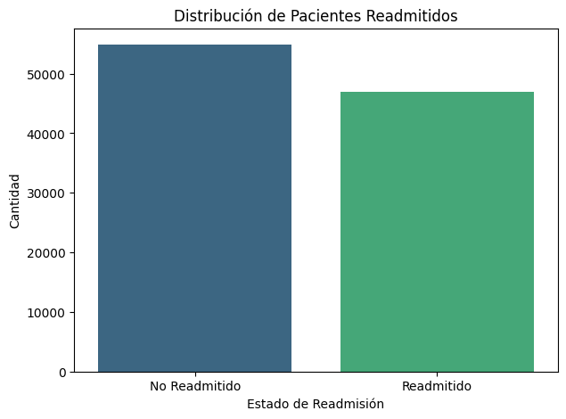
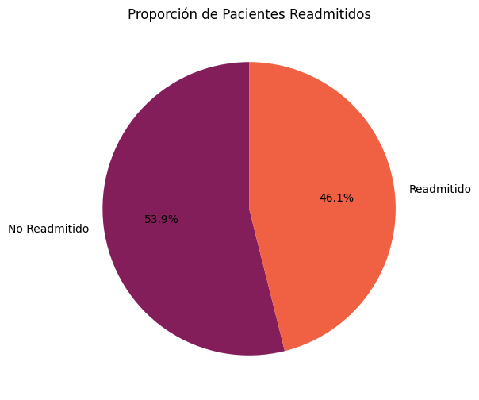
Análisis de Balance de Clases#
El balance de clases es crucial para problemas de clasificación. Un desbalance significativo puede afectar el rendimiento del modelo.
# Análisis detallado del balance de clases
from sklearn.utils.class_weight import compute_class_weight
# Conteo y proporción
class_counts = df['target'].value_counts()
class_proportions = df['target'].value_counts(normalize=True)
print("="*60)
print("ANÁLISIS DE BALANCE DE CLASES")
print("="*60)
print(f"\nConteo absoluto:")
print(class_counts)
print(f"\nProporción (%):")
print(class_proportions * 100)
# Calcular ratio de desbalance
imbalance_ratio = class_counts[0] / class_counts[1]
print(f"\n Ratio de desbalance: {imbalance_ratio:.2f}:1")
print(f" (Hay {imbalance_ratio:.2f} veces más pacientes NO readmitidos que readmitidos)")
# Calcular pesos de clase para balanceo
class_weights = compute_class_weight('balanced', classes=np.unique(df['target']), y=df['target'])
print(f"\n Pesos sugeridos para balanceo:")
print(f" Clase 0 (No readmitido): {class_weights[0]:.4f}")
print(f" Clase 1 (Readmitido): {class_weights[1]:.4f}")
# Visualización mejorada
fig, axes = plt.subplots(1, 2, figsize=(14, 5))
# Gráfico de barras
sns.countplot(x='target', data=df, palette=['#2ecc71', '#e74c3c'], hue='target', legend=False, ax=axes[0])
axes[0].set_title('Distribución de Clases (Conteo Absoluto)', fontsize=14, fontweight='bold')
axes[0].set_xlabel('Target', fontsize=12)
axes[0].set_ylabel('Cantidad de Pacientes', fontsize=12)
axes[0].set_xticklabels(['No Readmitido (0)', 'Readmitido (1)'])
for container in axes[0].containers:
axes[0].bar_label(container, fmt='%d')
# Gráfico de pastel
colors = ['#2ecc71', '#e74c3c']
axes[1].pie(class_counts, labels=['No Readmitido', 'Readmitido'], autopct='%1.1f%%',
colors=colors, startangle=90, textprops={'fontsize': 12, 'weight': 'bold'})
axes[1].set_title('Proporción de Clases', fontsize=14, fontweight='bold')
plt.tight_layout()
plt.show()
print("\n CONCLUSIÓN:")
if imbalance_ratio > 1.5:
print(f" Las clases están DESBALANCEADAS. Se recomienda aplicar técnicas de balanceo.")
else:
print(f" Las clases están relativamente balanceadas.")
============================================================
ANÁLISIS DE BALANCE DE CLASES
============================================================
Conteo absoluto:
target
0 54864
1 46902
Name: count, dtype: int64
Proporción (%):
target
0 53.911916
1 46.088084
Name: proportion, dtype: float64
Ratio de desbalance: 1.17:1
(Hay 1.17 veces más pacientes NO readmitidos que readmitidos)
Pesos sugeridos para balanceo:
Clase 0 (No readmitido): 0.9274
Clase 1 (Readmitido): 1.0849
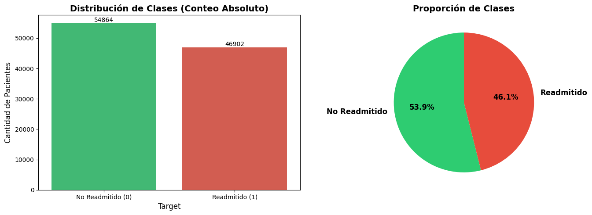
CONCLUSIÓN:
Las clases están relativamente balanceadas.
Análisis de Valores Faltantes#
Los valores faltantes pueden afectar significativamente el desempeño de los modelos de Machine Learning. Es crucial identificarlos y decidir cómo manejarlos.
# Análisis completo de valores faltantes
missing_data = pd.DataFrame({
'Columna': df.columns,
'Valores_Faltantes': df.isnull().sum(),
'Porcentaje': (df.isnull().sum() / len(df)) * 100
})
# Ordenar por porcentaje descendente
missing_data = missing_data[missing_data['Valores_Faltantes'] > 0].sort_values('Porcentaje', ascending=False)
print("="*70)
print("ANÁLISIS DE VALORES FALTANTES")
print("="*70)
print(f"\nTotal de columnas: {df.shape[1]}")
print(f"Columnas con valores faltantes: {len(missing_data)}")
print(f"\nDetalle:\n")
print(missing_data.to_string(index=False))
# Visualización de valores faltantes
fig, axes = plt.subplots(1, 2, figsize=(16, 6))
# Gráfico de barras
if len(missing_data) > 0:
axes[0].barh(missing_data['Columna'], missing_data['Porcentaje'], color='coral')
axes[0].set_xlabel('Porcentaje de Valores Faltantes (%)', fontsize=12)
axes[0].set_ylabel('Columnas', fontsize=12)
axes[0].set_title('Porcentaje de Valores Faltantes por Columna', fontsize=14, fontweight='bold')
axes[0].axvline(x=50, color='red', linestyle='--', linewidth=2, label='50% umbral')
axes[0].legend()
# Heatmap de valores faltantes
# Seleccionar columnas con valores faltantes
cols_with_missing = missing_data['Columna'].tolist()
missing_matrix = df[cols_with_missing].isnull().astype(int)
# Tomar una muestra si hay demasiadas filas
if len(missing_matrix) > 1000:
missing_matrix = missing_matrix.sample(1000, random_state=42)
sns.heatmap(missing_matrix.T, cmap='RdYlGn_r', cbar=False,
yticklabels=cols_with_missing, ax=axes[1])
axes[1].set_title('Patrón de Valores Faltantes (Muestra)', fontsize=14, fontweight='bold')
axes[1].set_xlabel('Índice de Muestra', fontsize=12)
else:
axes[0].text(0.5, 0.5, '¡No hay valores faltantes!',
ha='center', va='center', fontsize=16, fontweight='bold')
axes[0].axis('off')
axes[1].text(0.5, 0.5, '¡Dataset completo!',
ha='center', va='center', fontsize=16, fontweight='bold')
axes[1].axis('off')
plt.tight_layout()
plt.show()
# Recomendaciones
print("\n" + "="*70)
print(" RECOMENDACIONES:")
print("="*70)
if len(missing_data) > 0:
for idx, row in missing_data.iterrows():
if row['Porcentaje'] > 50:
print(f" 🔴 {row['Columna']}: {row['Porcentaje']:.1f}% - CRÍTICO: Considerar eliminar columna")
elif row['Porcentaje'] > 20:
print(f" 🟡 {row['Columna']}: {row['Porcentaje']:.1f}% - ALTO: Imputación requerida")
else:
print(f" 🟢 {row['Columna']}: {row['Porcentaje']:.1f}% - BAJO: Imputación simple posible")
else:
print(" No se detectaron valores faltantes en el dataset.")
======================================================================
ANÁLISIS DE VALORES FALTANTES
======================================================================
Total de columnas: 50
Columnas con valores faltantes: 9
Detalle:
Columna Valores_Faltantes Porcentaje
weight 98569 96.858479
max_glu_serum 96420 94.746772
A1Cresult 84748 83.277322
medical_specialty 49949 49.082208
payer_code 40256 39.557416
race 2273 2.233555
diag_3 1423 1.398306
diag_2 358 0.351787
diag_1 21 0.020636
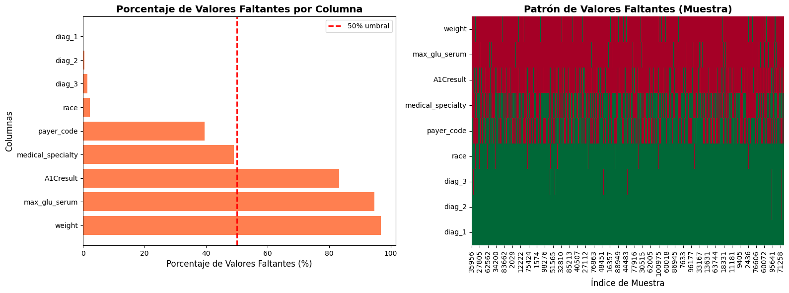
======================================================================
RECOMENDACIONES:
======================================================================
🔴 weight: 96.9% - CRÍTICO: Considerar eliminar columna
🔴 max_glu_serum: 94.7% - CRÍTICO: Considerar eliminar columna
🔴 A1Cresult: 83.3% - CRÍTICO: Considerar eliminar columna
🟡 medical_specialty: 49.1% - ALTO: Imputación requerida
🟡 payer_code: 39.6% - ALTO: Imputación requerida
🟢 race: 2.2% - BAJO: Imputación simple posible
🟢 diag_3: 1.4% - BAJO: Imputación simple posible
🟢 diag_2: 0.4% - BAJO: Imputación simple posible
🟢 diag_1: 0.0% - BAJO: Imputación simple posible
Análisis de Outliers#
Los outliers (valores atípicos) pueden indicar errores en los datos o eventos raros que requieren atención especial.
# Identificar variables numéricas para análisis de outliers
numeric_cols = df.select_dtypes(include=[np.number]).columns.tolist()
# Excluir IDs y la variable objetivo
exclude_cols = ['encounter_id', 'patient_nbr', 'target']
numeric_cols = [col for col in numeric_cols if col not in exclude_cols]
print("="*70)
print("ANÁLISIS DE OUTLIERS - VARIABLES NUMÉRICAS")
print("="*70)
print(f"\nVariables numéricas a analizar: {len(numeric_cols)}")
# Función para detectar outliers usando IQR
def detect_outliers_iqr(data, column):
Q1 = data[column].quantile(0.25)
Q3 = data[column].quantile(0.75)
IQR = Q3 - Q1
lower_bound = Q1 - 1.5 * IQR
upper_bound = Q3 + 1.5 * IQR
outliers = data[(data[column] < lower_bound) | (data[column] > upper_bound)]
return len(outliers), lower_bound, upper_bound
# Análisis de outliers
outlier_summary = []
for col in numeric_cols:
if df[col].notna().sum() > 0: # Solo si tiene datos
n_outliers, lower, upper = detect_outliers_iqr(df, col)
pct_outliers = (n_outliers / len(df)) * 100
outlier_summary.append({
'Variable': col,
'N_Outliers': n_outliers,
'Porcentaje': pct_outliers,
'Límite_Inferior': lower,
'Límite_Superior': upper
})
outlier_df = pd.DataFrame(outlier_summary).sort_values('Porcentaje', ascending=False)
print("\n", outlier_df.to_string(index=False))
# Visualización con boxplots
n_cols = 3
n_rows = (len(numeric_cols) + n_cols - 1) // n_cols
fig, axes = plt.subplots(n_rows, n_cols, figsize=(16, n_rows*4))
axes = axes.flatten() if n_rows > 1 else [axes] if n_cols == 1 else axes
for idx, col in enumerate(numeric_cols):
if df[col].notna().sum() > 0:
sns.boxplot(y=df[col], ax=axes[idx], color='skyblue')
axes[idx].set_title(f'{col}', fontsize=12, fontweight='bold')
axes[idx].set_ylabel('Valor', fontsize=10)
# Agregar información de outliers
n_out = outlier_df[outlier_df['Variable'] == col]['N_Outliers'].values
if len(n_out) > 0:
pct_out = outlier_df[outlier_df['Variable'] == col]['Porcentaje'].values[0]
axes[idx].text(0.5, 0.95, f'Outliers: {n_out[0]} ({pct_out:.1f}%)',
transform=axes[idx].transAxes, ha='center',
bbox=dict(boxstyle='round', facecolor='wheat', alpha=0.5))
# Ocultar ejes vacíos
for idx in range(len(numeric_cols), len(axes)):
axes[idx].axis('off')
plt.tight_layout()
plt.suptitle('Detección de Outliers - Método IQR', fontsize=16, fontweight='bold', y=1.001)
plt.show()
print("\n" + "="*70)
print(" INTERPRETACIÓN:")
print("="*70)
print(" Outliers identificados usando el método IQR (Rango Intercuartílico)")
print(" Límites: Q1 - 1.5*IQR y Q3 + 1.5*IQR")
print(" Los valores fuera de estos límites se consideran outliers")
======================================================================
ANÁLISIS DE OUTLIERS - VARIABLES NUMÉRICAS
======================================================================
Variables numéricas a analizar: 11
Variable N_Outliers Porcentaje Límite_Inferior Límite_Superior
number_outpatient 16739 16.448519 0.0 0.0
number_emergency 11383 11.185465 0.0 0.0
discharge_disposition_id 9818 9.647623 -3.5 8.5
number_inpatient 7049 6.926675 -1.5 2.5
admission_source_id 6956 6.835289 -8.0 16.0
num_procedures 4954 4.868031 -3.0 5.0
num_medications 2557 2.512627 -5.0 35.0
time_in_hospital 2252 2.212920 -4.0 12.0
admission_type_id 341 0.335082 -2.0 6.0
number_diagnoses 281 0.276124 1.5 13.5
num_lab_procedures 143 0.140518 -8.0 96.0
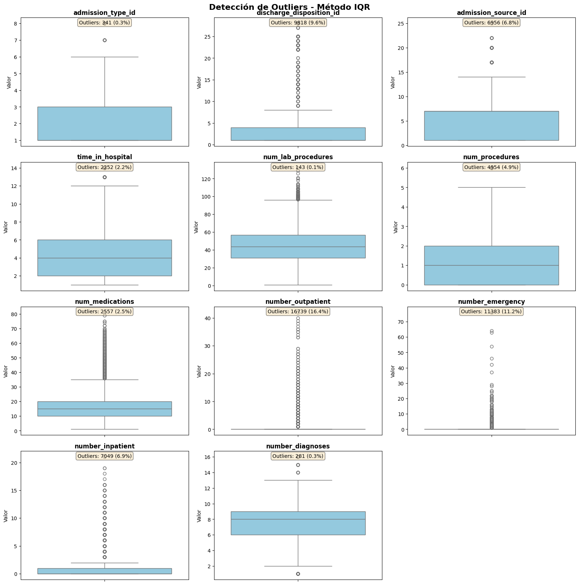
======================================================================
INTERPRETACIÓN:
======================================================================
Outliers identificados usando el método IQR (Rango Intercuartílico)
Límites: Q1 - 1.5*IQR y Q3 + 1.5*IQR
Los valores fuera de estos límites se consideran outliers
Análisis de Correlaciones y Colinealidad#
Las correlaciones nos ayudan a entender las relaciones entre variables. La colinealidad alta puede causar problemas en modelos de Machine Learning.
# Calcular matriz de correlación para variables numéricas
numeric_features = df.select_dtypes(include=[np.number]).columns.tolist()
# Excluir IDs
exclude = ['encounter_id', 'patient_nbr']
numeric_features = [col for col in numeric_features if col not in exclude]
correlation_matrix = df[numeric_features].corr()
print("="*70)
print("ANÁLISIS DE CORRELACIONES")
print("="*70)
# 1. Correlación con la variable objetivo
if 'target' in correlation_matrix.columns:
target_corr = correlation_matrix['target'].sort_values(ascending=False)
print("\n Correlación con la variable objetivo (target):")
print(target_corr.to_string())
# Visualizar correlación con target
plt.figure(figsize=(10, 8))
target_corr_plot = target_corr.drop('target') # Excluir la correlación consigo misma
colors = ['green' if x > 0 else 'red' for x in target_corr_plot.values]
target_corr_plot.plot(kind='barh', color=colors, edgecolor='black')
plt.title('Correlación de Variables con Target (Readmisión)', fontsize=14, fontweight='bold')
plt.xlabel('Coeficiente de Correlación de Pearson', fontsize=12)
plt.axvline(x=0, color='black', linestyle='-', linewidth=0.8)
plt.grid(axis='x', alpha=0.3)
plt.tight_layout()
plt.show()
# 2. Heatmap de correlación completa
plt.figure(figsize=(16, 14))
mask = np.triu(np.ones_like(correlation_matrix, dtype=bool)) # Máscara para la mitad superior
sns.heatmap(correlation_matrix, mask=mask, annot=True, fmt='.2f', cmap='coolwarm',
center=0, square=True, linewidths=0.5, cbar_kws={"shrink": 0.8})
plt.title('Matriz de Correlación - Variables Numéricas', fontsize=16, fontweight='bold')
plt.tight_layout()
plt.show()
# 3. Identificar pares de variables altamente correlacionadas (posible colinealidad)
print("\n" + "="*70)
print("ANÁLISIS DE COLINEALIDAD")
print("="*70)
# Encontrar correlaciones altas (excluyendo la diagonal)
threshold = 0.7
high_corr_pairs = []
for i in range(len(correlation_matrix.columns)):
for j in range(i+1, len(correlation_matrix.columns)):
if abs(correlation_matrix.iloc[i, j]) > threshold:
high_corr_pairs.append({
'Variable_1': correlation_matrix.columns[i],
'Variable_2': correlation_matrix.columns[j],
'Correlación': correlation_matrix.iloc[i, j]
})
if high_corr_pairs:
high_corr_df = pd.DataFrame(high_corr_pairs).sort_values('Correlación',
key=abs, ascending=False)
print(f"\n Pares de variables con correlación > {threshold}:")
print(high_corr_df.to_string(index=False))
# Visualización de pares altamente correlacionados
if len(high_corr_pairs) > 0:
fig, axes = plt.subplots(1, min(3, len(high_corr_pairs)),
figsize=(min(15, 5*len(high_corr_pairs)), 4))
if len(high_corr_pairs) == 1:
axes = [axes]
for idx, pair in enumerate(high_corr_pairs[:3]): # Mostrar máximo 3
var1, var2 = pair['Variable_1'], pair['Variable_2']
axes[idx].scatter(df[var1], df[var2], alpha=0.5, s=10)
axes[idx].set_xlabel(var1, fontsize=10)
axes[idx].set_ylabel(var2, fontsize=10)
axes[idx].set_title(f'Corr: {pair["Correlación"]:.3f}', fontsize=11, fontweight='bold')
# Agregar línea de tendencia
z = np.polyfit(df[var1].dropna(), df[var2].dropna(), 1)
p = np.poly1d(z)
axes[idx].plot(df[var1].dropna(), p(df[var1].dropna()), "r--", alpha=0.8, linewidth=2)
plt.tight_layout()
plt.suptitle('Visualización de Variables Altamente Correlacionadas',
fontsize=14, fontweight='bold', y=1.02)
plt.show()
else:
print(f"\n No se encontraron pares de variables con correlación > {threshold}")
print("\n" + "="*70)
print(" RECOMENDACIONES:")
print("="*70)
print(" • Correlación alta (>0.7) indica posible redundancia")
print(" • Considerar eliminar una de las variables altamente correlacionadas")
print(" • Usar PCA o regularización para manejar la multicolinealidad")
print(" • Variables poco correlacionadas con target (<0.1) pueden ser irrelevantes")
======================================================================
ANÁLISIS DE CORRELACIONES
======================================================================
Correlación con la variable objetivo (target):
target 1.000000
number_inpatient 0.217194
number_diagnoses 0.112564
number_emergency 0.103011
number_outpatient 0.082142
time_in_hospital 0.051289
num_medications 0.046772
admission_source_id 0.039986
num_lab_procedures 0.039253
admission_type_id -0.004923
discharge_disposition_id -0.014852
num_procedures -0.044748
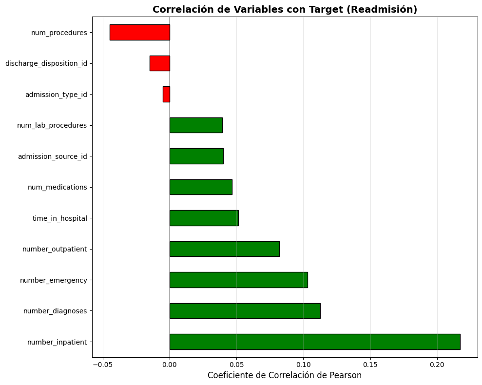
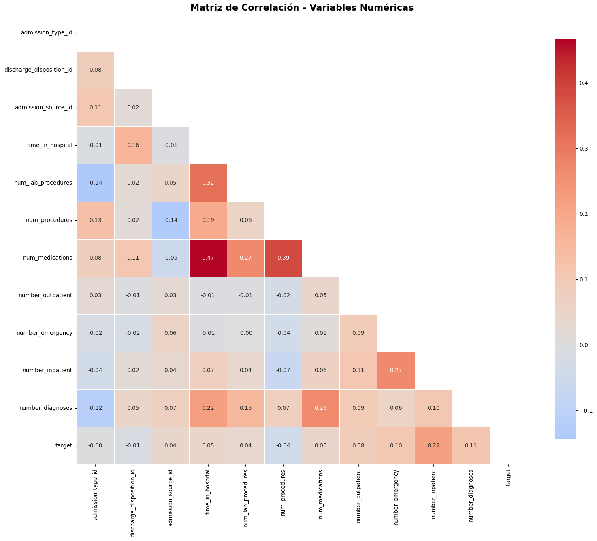
======================================================================
ANÁLISIS DE COLINEALIDAD
======================================================================
No se encontraron pares de variables con correlación > 0.7
======================================================================
RECOMENDACIONES:
======================================================================
• Correlación alta (>0.7) indica posible redundancia
• Considerar eliminar una de las variables altamente correlacionadas
• Usar PCA o regularización para manejar la multicolinealidad
• Variables poco correlacionadas con target (<0.1) pueden ser irrelevantes
Reducción de Dimensionalidad Exploratoria#
PCA (Análisis de Componentes Principales)#
PCA nos permite reducir la dimensionalidad del dataset manteniendo la mayor parte de la variabilidad de los datos.
from sklearn.decomposition import PCA
from sklearn.preprocessing import StandardScaler
# Preparar datos para PCA
# Seleccionar solo variables numéricas sin IDs ni target
numeric_cols_pca = [col for col in numeric_features if col not in ['target', 'encounter_id', 'patient_nbr']]
# Eliminar filas con valores faltantes para PCA
df_pca = df[numeric_cols_pca + ['target']].dropna()
X_pca = df_pca[numeric_cols_pca]
y_pca = df_pca['target']
print("="*70)
print("ANÁLISIS DE COMPONENTES PRINCIPALES (PCA)")
print("="*70)
print(f"\nDimensiones originales: {X_pca.shape}")
print(f"Variables utilizadas: {len(numeric_cols_pca)}")
# Estandarizar los datos (crucial para PCA)
scaler = StandardScaler()
X_scaled = scaler.fit_transform(X_pca)
# Aplicar PCA
pca = PCA()
X_pca_transformed = pca.fit_transform(X_scaled)
# Varianza explicada
explained_variance_ratio = pca.explained_variance_ratio_
cumulative_variance_ratio = np.cumsum(explained_variance_ratio)
print(f"\n Varianza explicada por los primeros 10 componentes:")
for i in range(min(10, len(explained_variance_ratio))):
print(f" PC{i+1}: {explained_variance_ratio[i]*100:.2f}% (Acumulada: {cumulative_variance_ratio[i]*100:.2f}%)")
# Determinar número óptimo de componentes (95% de varianza)
n_components_95 = np.argmax(cumulative_variance_ratio >= 0.95) + 1
print(f"\n Componentes necesarios para explicar 95% de varianza: {n_components_95}")
# Visualizaciones
fig, axes = plt.subplots(2, 2, figsize=(16, 12))
# 1. Scree Plot (Varianza explicada por componente)
axes[0, 0].bar(range(1, len(explained_variance_ratio) + 1),
explained_variance_ratio * 100, alpha=0.7, color='steelblue')
axes[0, 0].plot(range(1, len(explained_variance_ratio) + 1),
explained_variance_ratio * 100, 'ro-', linewidth=2, markersize=5)
axes[0, 0].set_xlabel('Componente Principal', fontsize=12)
axes[0, 0].set_ylabel('Varianza Explicada (%)', fontsize=12)
axes[0, 0].set_title('Scree Plot - Varianza por Componente', fontsize=14, fontweight='bold')
axes[0, 0].grid(alpha=0.3)
# 2. Varianza acumulada
axes[0, 1].plot(range(1, len(cumulative_variance_ratio) + 1),
cumulative_variance_ratio * 100, 'bo-', linewidth=2, markersize=5)
axes[0, 1].axhline(y=95, color='r', linestyle='--', linewidth=2, label='95% de varianza')
axes[0, 1].axvline(x=n_components_95, color='g', linestyle='--', linewidth=2,
label=f'{n_components_95} componentes')
axes[0, 1].set_xlabel('Número de Componentes', fontsize=12)
axes[0, 1].set_ylabel('Varianza Explicada Acumulada (%)', fontsize=12)
axes[0, 1].set_title('Varianza Explicada Acumulada', fontsize=14, fontweight='bold')
axes[0, 1].legend()
axes[0, 1].grid(alpha=0.3)
# 3. Proyección en 2D (PC1 vs PC2)
scatter = axes[1, 0].scatter(X_pca_transformed[:, 0], X_pca_transformed[:, 1],
c=y_pca, cmap='coolwarm', alpha=0.6, s=10)
axes[1, 0].set_xlabel(f'PC1 ({explained_variance_ratio[0]*100:.1f}%)', fontsize=12)
axes[1, 0].set_ylabel(f'PC2 ({explained_variance_ratio[1]*100:.1f}%)', fontsize=12)
axes[1, 0].set_title('Proyección PCA 2D (PC1 vs PC2)', fontsize=14, fontweight='bold')
axes[1, 0].legend(*scatter.legend_elements(), title="Target", loc='best')
axes[1, 0].grid(alpha=0.3)
# 4. Loadings (contribución de variables a PC1 y PC2)
n_features_to_show = min(10, len(numeric_cols_pca))
pc1_loadings = pca.components_[0]
pc2_loadings = pca.components_[1]
# Obtener las variables más importantes
top_features_pc1 = np.argsort(np.abs(pc1_loadings))[-n_features_to_show:]
feature_names = np.array(numeric_cols_pca)
y_pos = np.arange(n_features_to_show)
axes[1, 1].barh(y_pos, pc1_loadings[top_features_pc1], alpha=0.7, color='steelblue')
axes[1, 1].set_yticks(y_pos)
axes[1, 1].set_yticklabels(feature_names[top_features_pc1], fontsize=9)
axes[1, 1].set_xlabel('Loading Value', fontsize=12)
axes[1, 1].set_title(f'Top {n_features_to_show} Features en PC1', fontsize=14, fontweight='bold')
axes[1, 1].axvline(x=0, color='black', linestyle='-', linewidth=0.8)
axes[1, 1].grid(alpha=0.3, axis='x')
plt.tight_layout()
plt.show()
print("\n" + "="*70)
print(" INTERPRETACIÓN:")
print("="*70)
print(f" • PCA reduce {len(numeric_cols_pca)} variables a {n_components_95} componentes")
print(f" • Manteniendo el 95% de la información original")
print(f" • PC1 explica {explained_variance_ratio[0]*100:.1f}% de la varianza")
print(f" • PC2 explica {explained_variance_ratio[1]*100:.1f}% de la varianza")
print(f" • Total PC1+PC2: {(explained_variance_ratio[0]+explained_variance_ratio[1])*100:.1f}%")
======================================================================
ANÁLISIS DE COMPONENTES PRINCIPALES (PCA)
======================================================================
Dimensiones originales: (101766, 11)
Variables utilizadas: 11
Varianza explicada por los primeros 10 componentes:
PC1: 18.75% (Acumulada: 18.75%)
PC2: 12.99% (Acumulada: 31.73%)
PC3: 10.96% (Acumulada: 42.69%)
PC4: 9.98% (Acumulada: 52.67%)
PC5: 8.89% (Acumulada: 61.56%)
PC6: 8.58% (Acumulada: 70.14%)
PC7: 7.55% (Acumulada: 77.68%)
PC8: 6.66% (Acumulada: 84.34%)
PC9: 5.88% (Acumulada: 90.22%)
PC10: 5.55% (Acumulada: 95.76%)
Componentes necesarios para explicar 95% de varianza: 10
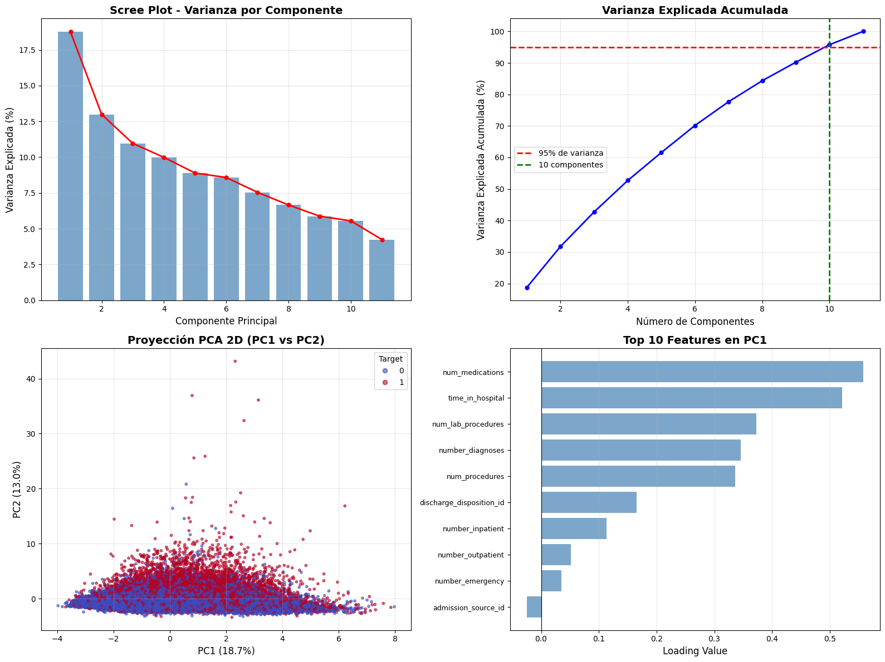
======================================================================
INTERPRETACIÓN:
======================================================================
• PCA reduce 11 variables a 10 componentes
• Manteniendo el 95% de la información original
• PC1 explica 18.7% de la varianza
• PC2 explica 13.0% de la varianza
• Total PC1+PC2: 31.7%
t-SNE (t-Distributed Stochastic Neighbor Embedding)#
t-SNE es una técnica de reducción de dimensionalidad especialmente útil para visualización, ya que preserva las relaciones locales entre puntos.
from sklearn.manifold import TSNE
import warnings
warnings.filterwarnings('ignore')
print("="*70)
print("t-SNE - VISUALIZACIÓN NO LINEAL")
print("="*70)
print("⏳ Procesando t-SNE... (esto puede tomar varios minutos)")
# Tomar una muestra para t-SNE (es computacionalmente costoso)
sample_size = min(5000, len(df_pca))
df_tsne_sample = df_pca.sample(n=sample_size, random_state=42)
X_tsne = df_tsne_sample[numeric_cols_pca]
y_tsne = df_tsne_sample['target']
# Estandarizar
X_tsne_scaled = scaler.fit_transform(X_tsne)
# Aplicar t-SNE con diferentes perplexities
perplexities = [30, 50]
fig, axes = plt.subplots(1, len(perplexities), figsize=(16, 6))
for idx, perplexity in enumerate(perplexities):
print(f" Calculando t-SNE con perplexity={perplexity}...")
tsne = TSNE(n_components=2, perplexity=perplexity, random_state=42,
n_iter=1000, verbose=0)
X_tsne_transformed = tsne.fit_transform(X_tsne_scaled)
# Visualizar
scatter = axes[idx].scatter(X_tsne_transformed[:, 0], X_tsne_transformed[:, 1],
c=y_tsne, cmap='coolwarm', alpha=0.6, s=20)
axes[idx].set_xlabel('t-SNE Dimensión 1', fontsize=12)
axes[idx].set_ylabel('t-SNE Dimensión 2', fontsize=12)
axes[idx].set_title(f't-SNE (perplexity={perplexity})', fontsize=14, fontweight='bold')
axes[idx].legend(*scatter.legend_elements(), title="Target", loc='best')
axes[idx].grid(alpha=0.3)
plt.tight_layout()
plt.suptitle(f't-SNE Visualization (muestra de {sample_size} registros)',
fontsize=16, fontweight='bold', y=1.02)
plt.show()
print("\n t-SNE completado")
print("\n" + "="*70)
print(" INTERPRETACIÓN:")
print("="*70)
print(" • t-SNE agrupa puntos similares en el espacio de alta dimensión")
print(" • Útil para detectar clusters naturales en los datos")
print(" • Perplexity controla el balance entre estructura local y global")
print(" • Colores: rojo = readmitido, azul = no readmitido")
print(f" • Análisis realizado con {sample_size} muestras aleatorias")
======================================================================
t-SNE - VISUALIZACIÓN NO LINEAL
======================================================================
⏳ Procesando t-SNE... (esto puede tomar varios minutos)
Calculando t-SNE con perplexity=30...
Calculando t-SNE con perplexity=50...
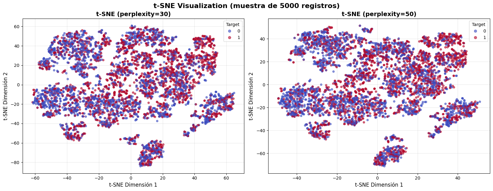
t-SNE completado
======================================================================
INTERPRETACIÓN:
======================================================================
• t-SNE agrupa puntos similares en el espacio de alta dimensión
• Útil para detectar clusters naturales en los datos
• Perplexity controla el balance entre estructura local y global
• Colores: rojo = readmitido, azul = no readmitido
• Análisis realizado con 5000 muestras aleatorias
Resumen del EDA#
Conclusiones principales del Análisis Exploratorio de Datos#
print("="*80)
print(" "*25 + "RESUMEN EJECUTIVO DEL EDA")
print("="*80)
# Información general del dataset
print("\n INFORMACIÓN GENERAL:")
print(f" • Total de registros: {len(df):,}")
print(f" • Total de variables: {df.shape[1]}")
print(f" • Variables numéricas: {len(df.select_dtypes(include=[np.number]).columns)}")
print(f" • Variables categóricas: {len(df.select_dtypes(include=['object']).columns)}")
# Balance de clases
if 'target' in df.columns:
class_0 = (df['target'] == 0).sum()
class_1 = (df['target'] == 1).sum()
ratio = class_0 / class_1
print(f"\n BALANCE DE CLASES:")
print(f" • Clase 0 (No readmitido): {class_0:,} ({class_0/len(df)*100:.1f}%)")
print(f" • Clase 1 (Readmitido): {class_1:,} ({class_1/len(df)*100:.1f}%)")
print(f" • Ratio de desbalance: {ratio:.2f}:1")
if ratio > 1.5:
print(f" Dataset DESBALANCEADO - Se requiere técnicas de balanceo")
# Valores faltantes
missing_cols = df.isnull().sum()
missing_cols = missing_cols[missing_cols > 0]
print(f"\n VALORES FALTANTES:")
if len(missing_cols) > 0:
print(f" • Columnas con valores faltantes: {len(missing_cols)}")
print(f" • Variables más afectadas:")
for col in missing_cols.nlargest(5).index:
pct = (df[col].isnull().sum() / len(df)) * 100
print(f" - {col}: {pct:.1f}%")
else:
print(f" No hay valores faltantes en el dataset")
# Outliers
print(f"\n OUTLIERS:")
print(f" • Variables analizadas: {len(numeric_cols)}")
print(f" • Método: IQR (Rango Intercuartílico)")
print(f" • Los outliers fueron identificados pero NO removidos")
print(f" • Considerar tratamiento según el contexto del dominio")
# Correlaciones
print(f"\n CORRELACIONES:")
if 'target' in df.columns and 'target' in correlation_matrix.columns:
top_corr = correlation_matrix['target'].abs().sort_values(ascending=False)[1:6]
print(f" • Variables más correlacionadas con target:")
for var, corr in top_corr.items():
print(f" - {var}: {corr:.3f}")
# Reducción de dimensionalidad
print(f"\n REDUCCIÓN DE DIMENSIONALIDAD:")
print(f" • PCA: {n_components_95} componentes explican 95% de varianza")
print(f" • PC1 captura {explained_variance_ratio[0]*100:.1f}% de varianza")
print(f" • t-SNE: Visualización completada con muestra de {sample_size} registros")
# Recomendaciones
print("\n" + "="*80)
print(" RECOMENDACIONES PARA MODELADO:")
print("="*80)
print(" 1. Aplicar técnicas de balanceo (SMOTE, undersampling, class_weight)")
print(" 2. Tratar valores faltantes (imputación o eliminación)")
print(" 3. Considerar PCA para reducir dimensionalidad si es necesario")
print(" 4. Validar outliers con expertos del dominio antes de removerlos")
print(" 5. Eliminar o combinar variables altamente correlacionadas")
print(" 6. Normalizar/estandarizar variables numéricas")
print(" 7. Codificar variables categóricas (One-Hot, Label Encoding)")
print("="*80)
================================================================================
RESUMEN EJECUTIVO DEL EDA
================================================================================
INFORMACIÓN GENERAL:
• Total de registros: 101,766
• Total de variables: 50
• Variables numéricas: 14
• Variables categóricas: 36
BALANCE DE CLASES:
• Clase 0 (No readmitido): 54,864 (53.9%)
• Clase 1 (Readmitido): 46,902 (46.1%)
• Ratio de desbalance: 1.17:1
VALORES FALTANTES:
• Columnas con valores faltantes: 9
• Variables más afectadas:
- weight: 96.9%
- max_glu_serum: 94.7%
- A1Cresult: 83.3%
- medical_specialty: 49.1%
- payer_code: 39.6%
OUTLIERS:
• Variables analizadas: 11
• Método: IQR (Rango Intercuartílico)
• Los outliers fueron identificados pero NO removidos
• Considerar tratamiento según el contexto del dominio
CORRELACIONES:
• Variables más correlacionadas con target:
- number_inpatient: 0.217
- number_diagnoses: 0.113
- number_emergency: 0.103
- number_outpatient: 0.082
- time_in_hospital: 0.051
REDUCCIÓN DE DIMENSIONALIDAD:
• PCA: 10 componentes explican 95% de varianza
• PC1 captura 18.7% de varianza
• t-SNE: Visualización completada con muestra de 5000 registros
================================================================================
RECOMENDACIONES PARA MODELADO:
================================================================================
1. Aplicar técnicas de balanceo (SMOTE, undersampling, class_weight)
2. Tratar valores faltantes (imputación o eliminación)
3. Considerar PCA para reducir dimensionalidad si es necesario
4. Validar outliers con expertos del dominio antes de removerlos
5. Eliminar o combinar variables altamente correlacionadas
6. Normalizar/estandarizar variables numéricas
7. Codificar variables categóricas (One-Hot, Label Encoding)
================================================================================
Raza#
sns.countplot(x=df.race, data = df)
plt.title("Raza")
plt.ylabel("Cantidad")
plt.show()
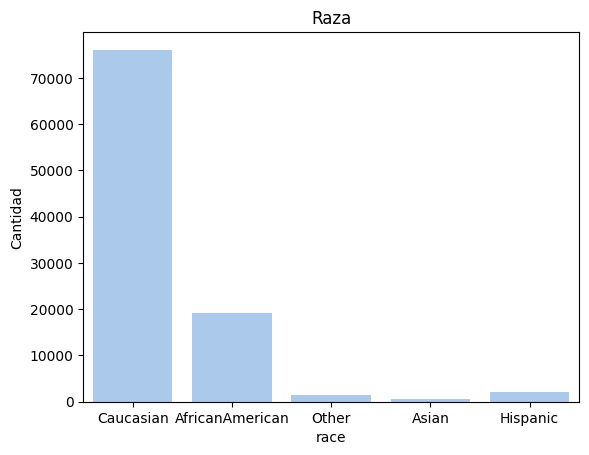
Caucásicos son el grupo mayoritario (al rededor de 750000), seguido por Afroamericanos (al rededor de 20000).
Grupos como Asiáticos, Hispanos y Otras razas están subrepresentados (<10,000 cada uno).
La muestra desbalanceada podría afectar la generalización de resultados para minorías.
sns.countplot(x="race", hue= "target", data = df)
plt.title("Readmitidos - Raza")
plt.xlabel("Raza")
plt.legend(title="Readmisión")
plt.ylabel("Cantidad")
plt.show()
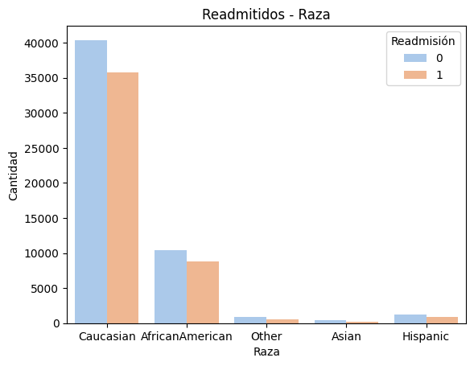
Afroamericanos tienen la mayor proporción de readmisiones , pero también son el segundo grupo más numeroso.
Caucásicos muestran una proporción similar de readmisiones en términos absolutos, pero su tamaño de grupo es mayor.
Aunque “Otras razas” tienen menos pacientes, casi el 50% fueron readmitidos.
sns.catplot(x = "race", y = "target",
data = df, kind = "bar", height= 5, aspect = 1.2)
plt.title("Probabilidad de readmisión")
plt.ylabel("Readmitidos")
plt.show()
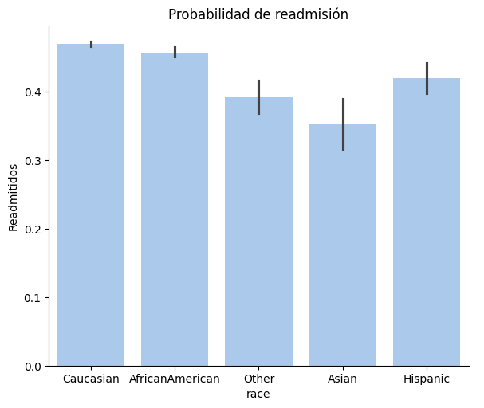
Caucasicos tienen la mayor probabilidad de readmisión, seguidos por Afroamericanos, pero tambien son los grupos más numerosos en los datos (posible sesgo)).
Asíaticos y “otras razas” muestran las tasas más bajas.
Género#
sns.countplot(x = "gender", data = df)
plt.title("Distribución según el género")
plt.xlabel("Género")
plt.ylabel("Cantidad")
plt.show()
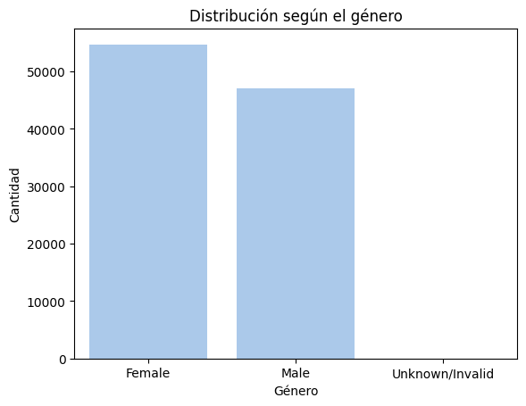
Mujeres: Representan la mayor proporción de pacientes diabéticos en el conjunto de datos.
Hombres: Constituyen alrededor del 40%, lo que sugiere una prevalencia menor en esta muestra.
Género desconocido/inválido (Unknown/Invalid): La categoría es mínima (cercana a 0%), lo que indica que no afecta significativamente el análisis.
sns.countplot(x = "gender", hue = "target", data = df)
plt.title("Género - Readmitidos")
plt.xlabel("Género")
plt.ylabel("Cantidad")
plt.legend(title = ("Readmisión"))
plt.show()
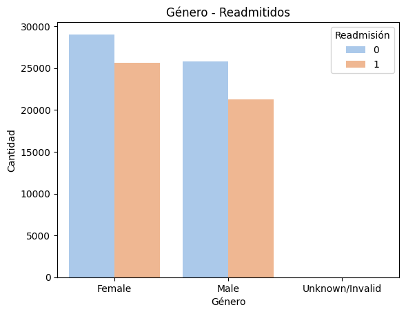
Mujeres: Representan la mayor cantidad absoluta de readmisiones, coherente con su predominio en la muestra.
Hombres: Aunque son menos numerosos, su tasa de readmisión es similar a la de las mujeres.
En terminos de proporción ambos generos tienen menos readmitidos.
g = sns.catplot(x = "gender",y = "target",
data = df, kind = "bar", height= 5)
g.set_ylabels("Probabilidad de readmisión")
g.set_xlabels("Género")
plt.show()
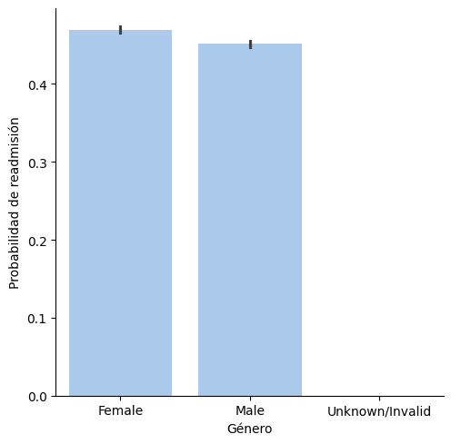
Las mujeres diabéticas tienen un ligero mayor riesgo de readmisión hospitalaria que los hombres en esta muestra, aunque no se puede concluir nada aún.
Edad#
plt.figure(figsize=(8, 4))
sns.countplot(x="age", data = df)
plt.xlabel("edad")
plt.ylabel("Cantidad")
plt.show()
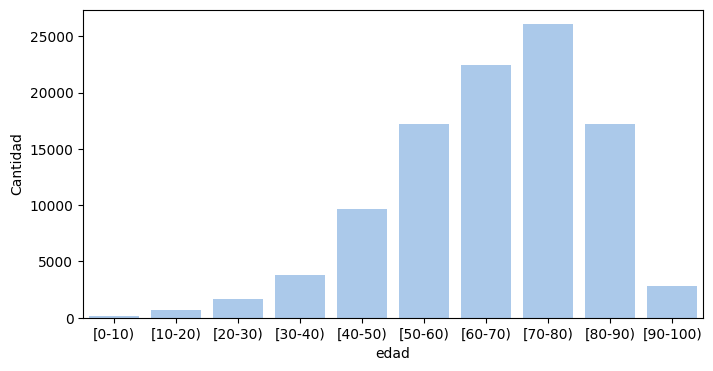
La mayor parte del estudio se concentra en persons mayores de 50 años y menores que 90 años
El grupo de edades más numeroso dentro del estudio es entre 70 y 80 años con aproximadamente 25000 personas dentro de este rango de edad
Prácticamente nula representación en [0-10] años
plt.figure(figsize=(8, 4))
sns.countplot(x = "age", hue = "target", data = df)
plt.title("Edad - Readmitidos")
plt.xlabel("Edad")
plt.legend(title="Readmisión")
plt.ylabel("Cantidad")
plt.show()
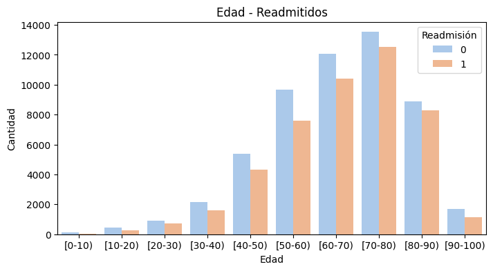
Aunque con poca representación, en el rango de 20 a 30 años, tienen la proporción más grande de pacientes readmitidos
De manera general los pacientes de todas las edades existen menos readmitidos.
y = sns.catplot(x = "age", y = "target", data = df,
kind = "bar", height = 5, aspect = 1.3)
y.set_ylabels("Probabilidad de readmisión")
plt.show()
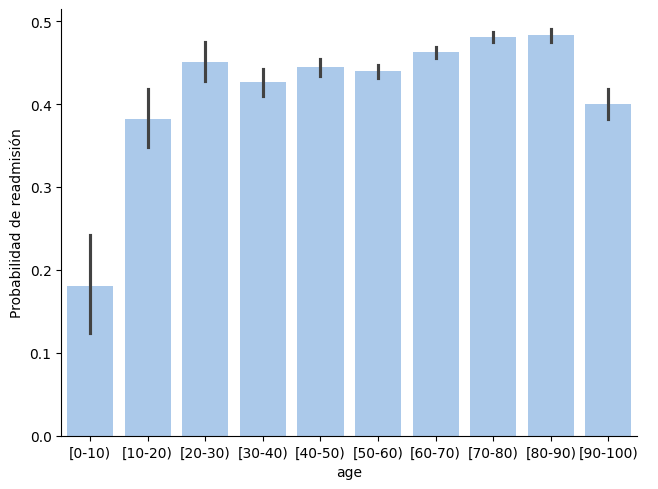
La mayor probabilidad de readmisión la tienen los pacientes del rango de edad de 80 a 90 años con aproximadamente 47% de probabilidad de readmisión.
En el estudio a partir de los 20 años se tiene una probabilidad de ser readmitido aproximada al 40%
Weight#
print(df['weight'].dropna().unique())
# Mapeo de categorías de peso a valores numéricos
# Asignamos un valor promedio a cada rango de peso para facilitar el análisis.
# Por ejemplo, '[75-100)' se convierte en 87.5, '[50-75)' en 62.5, etc.
# El rango '>200' se asigna a 205 como un valor representativo.
# Esto permite un análisis más sencillo al poder analizarse como una variable numérica.
mapeo= {
'[75-100)':(75+100)/2,
'[50-75)':(50+75)/2,
'[0-25)':25/2,
'[100-125)': (100+125)/2,
'[25-50)':(25+50)/2,
'[125-150)':(125+150)/2,
'[150-175)':(150+175)/2,
'[175-200)':(175+200)/2,
'>200': 205
}
df['avg_weight'] = df['weight'].map(mapeo)
print(df['avg_weight'].dropna().unique())
['[75-100)' '[50-75)' '[0-25)' '[100-125)' '[25-50)' '[125-150)'
'[175-200)' '[150-175)' '>200']
[ 87.5 62.5 12.5 112.5 37.5 137.5 187.5 162.5 205. ]
sns.countplot(x = "avg_weight", data = df,
order = df.avg_weight.value_counts().index)
plt.title('Distribución de Pacientes por Peso')
plt.show()
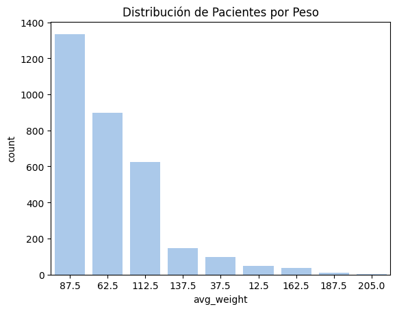
plt.pie([df['weight'].notnull().mean(), df['weight'].isnull().mean()], labels=['datos tomados','datos faltanes'], autopct='%1.1f%%')
plt.title('Datos presentes vs faltantes en "weight"')
plt.show()
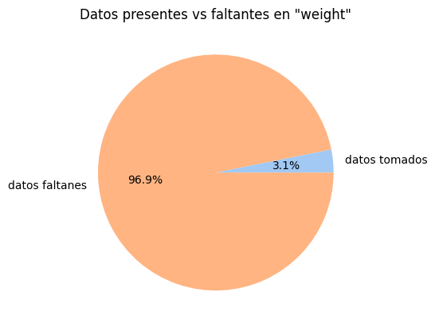
Admission Type#
La variable admission_type_id describe cómo fue clasificada la admisión del paciente (por ejemplo, si fue una emergencia, urgente, electiva, etc.). Al igual que la fuente de admisión, contiene varios IDs que podemos simplificar.
sns.countplot(x="admission_type_id", data=df)
plt.title("Distribución Original de Admission Type IDs")
plt.show()
print("Distribución de IDs de Tipo de Admisión:")
print(df['admission_type_id'].value_counts())
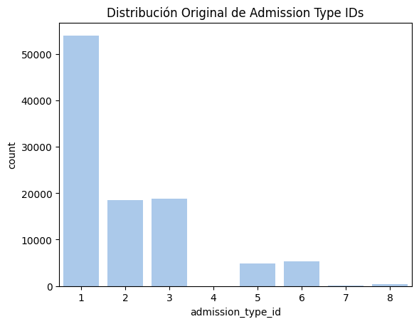
Distribución de IDs de Tipo de Admisión:
admission_type_id
1 53990
3 18869
2 18480
6 5291
5 4785
8 320
7 21
4 10
Name: count, dtype: int64
La estrategia de agrupación es la siguiente:
Emergency/Urgent: Se combinan los tipos de admisión Emergencia (1), Urgente (2) y Centro de Trauma (7). Todos representan admisiones no planificadas y de alta prioridad.
Elective: El tipo de admisión Electiva (3) se mantiene como una categoría separada, ya que representa un ingreso planificado, que es fundamentalmente diferente a una emergencia.
Newborn: El tipo Recién Nacido (4) es un caso muy específico y se mantiene separado.
Unknown/NA: Se unifican todos los valores nulos o no disponibles (5, 6, 8) en un único valor
NaNpara ser tratado como dato faltante.
# --- 1. Crear el mapa de agrupación ---
admission_type_map = {
# Grupo 'Emergency/Urgent'
1: 'Emergency/Urgent', 2: 'Emergency/Urgent', 7: 'Emergency/Urgent',
# Grupo 'Elective'
3: 'Elective',
# Grupo 'Newborn'
4: 'Newborn',
# Grupo 'Unknown/NA'
5: np.nan, 6: np.nan, 8: np.nan,
}
# --- 2. Aplicar el mapeo para crear la nueva columna ---
df['admission_type_group'] = df['admission_type_id'].map(admission_type_map)
plt.figure(figsize=(8, 5))
sns.countplot(x="admission_type_group", data=df, order=df['admission_type_group'].value_counts().index)
plt.title('Distribución de Grupos de Tipo de Admisión (Después de la Agrupación)')
plt.show()
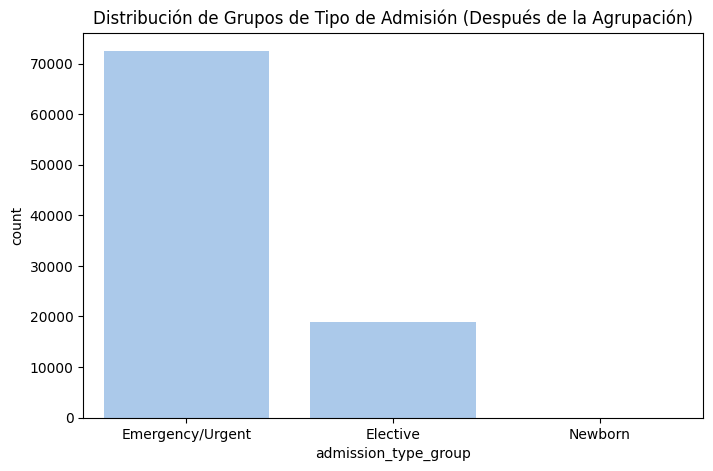
# Calcular el orden de las barras
plot_order = df.groupby('admission_type_group')['target'].mean().sort_values(ascending=False).index
# Crear el gráfico
g = sns.catplot(
x='admission_type_group',
y='target',
data=df,
kind='bar',
order=plot_order,
height=6, aspect=1.2
)
g.set_axis_labels("Grupo de Tipo de Admisión", "Tasa de Reingreso Promedio")
g.fig.suptitle("Tasa de Reingreso por Tipo de Admisión", y=1.03)
plt.show()
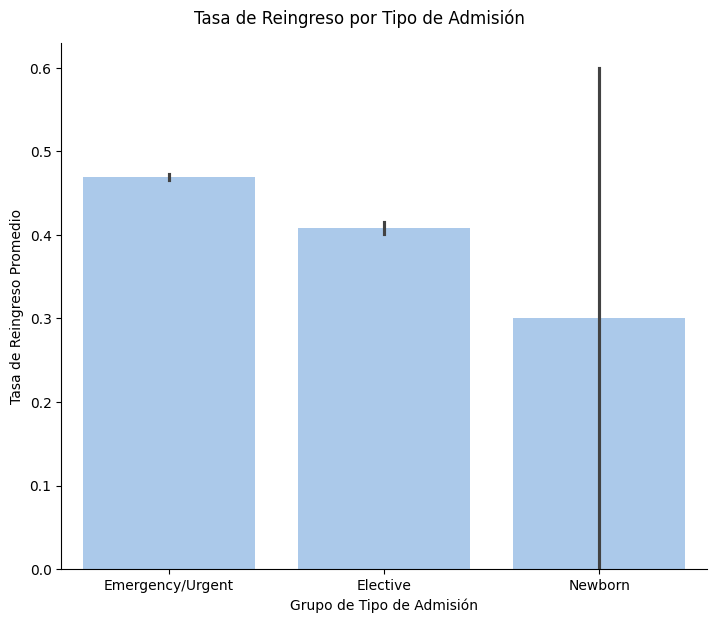
La clase Newborn sería la más problemática en este caso con tan pocas observaciones.
Admission Source ID#
La variable admission_source_id describe la fuente de la admisión hospitalaria del paciente. Contiene 26 identificadores numéricos distintos, muchos de los cuales tienen una frecuencia muy baja o representan conceptos similares.
sns.countplot(x="admission_source_id", data=df)
plt.title("Distribución Original de Admission Source ID")
plt.show()
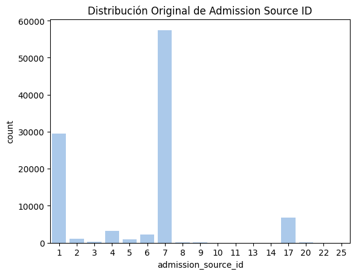
Observaciones:
La distribución está muy desbalanceada. La categoría 7 (Sala de Emergencias) domina por completo, seguida de la 1 (Referencia Médica).
Muchas categorías (como 8, 11, 13, 14, 22, 25) tienen un número de registros tan bajo que son estadísticamente insignificantes por sí solas.
Existen múltiples IDs para conceptos similares (ej., varios tipos de “Referencia” y “Traslado”).
Hay IDs que representan datos nulos o inválidos (ej., 9: ‘Not Available’, 20: ‘Not Mapped’, 17: ‘NULL’).
Para solucionar estos problemas, decidimos agrupar los 26 IDs en un número menor de categorías lógicas y coherentes.
La estrategia de agrupación fue la siguiente:
Emergency: Agrupa los ingresos a través de la sala de emergencias.
Referral: Consolida todas las formas de referencias médicas (de médico, clínica, etc.).
Transfer: Agrupa todos los traslados desde otras instalaciones médicas (hospitales, centros de enfermería, etc.).
Birth-Related: Combina todos los ingresos relacionados con partos.
Other: Categorías raras y distintas como “Orden Judicial”.
Unknown/NA: Unifica todos los valores nulos, desconocidos o no mapeados, que luego serán tratados como datos faltantes (
NaN).
# Crear el diccionario de mapeo
admission_map = {
# Grupo 'Emergency'
7: 'Emergency',
# Grupo 'Referral'
1: 'Referral', 2: 'Referral', 3: 'Referral',
# Grupo 'Transfer'
4: 'Transfer', 5: 'Transfer', 6: 'Transfer', 10: 'Transfer',
18: 'Transfer', 19: 'Transfer', 22: 'Transfer', 25: 'Transfer', 26: 'Transfer',
# Grupo 'Birth-Related'
11: 'Birth-Related', 12: 'Birth-Related', 13: 'Birth-Related', 14: 'Birth-Related',
23: 'Birth-Related', 24: 'Birth-Related',
# Grupo 'Other'
8: 'Other',
# Grupo 'Unknown/NA'
9: np.nan, 15: np.nan, 17: np.nan, 20: np.nan, 21: np.nan
}
# --- 2. Aplicar el mapeo a la columna ---
df['admission_source_group'] = df['admission_source_id'].map(admission_map)
# --- 3. Analizar los resultados de la nueva agrupación ---
# a) Ver la distribución de las nuevas categorías
print("Distribución de las nuevas categorías de 'admission_source':")
print(df['admission_source_group'].value_counts(dropna=False)) # dropna=False para contar los NaN
# b) Visualizar la nueva distribución
plt.figure(figsize=(10, 6))
sns.countplot(x="admission_source_group", data=df, order=df['admission_source_group'].value_counts().index)
plt.title('Distribución de Grupos de Fuente de Admisión')
plt.ylabel('Frecuencia')
plt.xlabel('Grupo de Admisión')
plt.xticks(rotation=45) # Rotar las etiquetas para que no se solapen
plt.show()
# c) La pregunta clave: ¿Influye esta nueva categoría en el reingreso?
plt.figure(figsize=(10, 7))
sns.countplot(x="admission_source_group", hue="target", data=df, order=df['admission_source_group'].value_counts().index)
plt.title('Reingreso según el Grupo de Fuente de Admisión')
plt.ylabel('Frecuencia')
plt.xlabel('Grupo de Admisión')
plt.xticks(rotation=45)
plt.legend(title='Reingreso')
plt.show()
Distribución de las nuevas categorías de 'admission_source':
admission_source_group
Emergency 57494
Referral 30856
NaN 7067
Transfer 6328
Other 16
Birth-Related 5
Name: count, dtype: int64
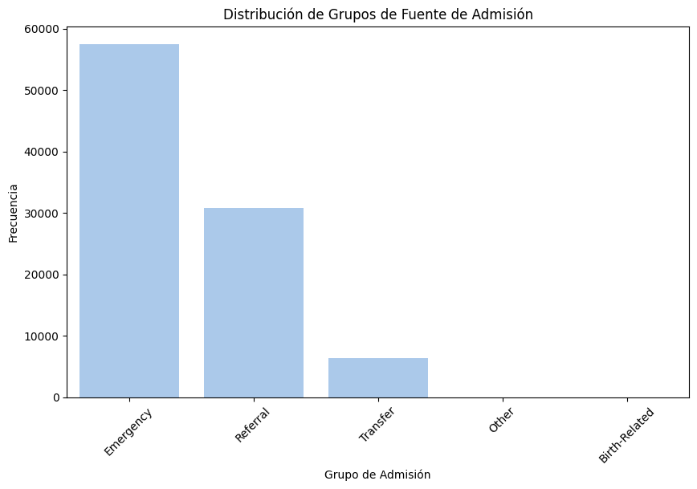
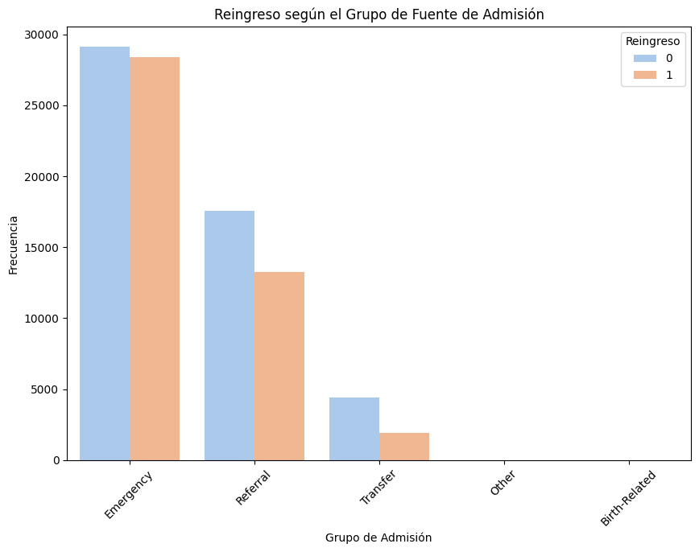
plot_order = df.groupby('admission_source_group')['target'].mean().sort_values(ascending=False).index
# Usamos catplot para crear el gráfico de barras.
# 'y' es nuestra variable objetivo (0 o 1), por lo que el promedio es la tasa de reingreso.
g = sns.catplot(
x='admission_source_group',
y='target',
data=df,
kind='bar',
order=plot_order, # Aplicamos el orden calculado
height=6, # Ajustamos el tamaño para mayor claridad
aspect=1.5
)
# Mejoramos las etiquetas y el título para una presentación profesional.
g.set_axis_labels("Grupo de Fuente de Admisión", "Tasa de Reingreso Promedio")
g.fig.suptitle("Tasa de Reingreso por Fuente de Admisión", y=1.03) # Título principal
plt.xticks(rotation=30, ha='right') # Rotamos las etiquetas para que no se superpongan
plt.show()
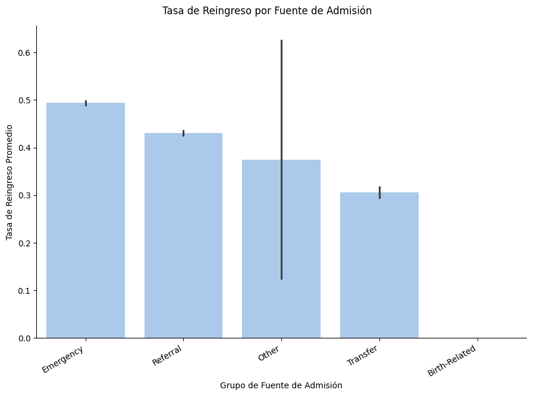
Qué vemos: La barra se sitúa en torno al 37%, pero lo más importante es el enorme intervalo de confianza. Este intervalo abarca desde ~0.15 hasta más de 0.60.
La barra de error tan grande nos dice que hay muy pocos datos en esta categoría (Court/Law Enforcement). Debido a esta falta de datos, la estimación del 37% es muy poco fiable. No podemos sacar conclusiones sólidas sobre este grupo; Es un punto de datos ruidoso.
Time in hospital#
df['time_in_hospital'].describe().to_frame().style.set_caption("Resumen estadístico de time_in_hospital")
| time_in_hospital | |
|---|---|
| count | 101766.000000 |
| mean | 4.395987 |
| std | 2.985108 |
| min | 1.000000 |
| 25% | 2.000000 |
| 50% | 4.000000 |
| 75% | 6.000000 |
| max | 14.000000 |
Promedio: 4.4 días.
Mediana: 4 días (la mitad de los pacientes se queda 4 días o menos).
Std: La desviación estándar es alta (casi 3 días), lo que significa que las duraciones de las estancias no son consistentes. Varían mucho entre pacientes.
plt.figure(figsize=(8,5))
# Histograma
sns.histplot(df['time_in_hospital'],
bins=range(df['time_in_hospital'].min(), df['time_in_hospital'].max() + 1),
kde=True,
color='skyblue',
edgecolor='black')
plt.title("Distribución de 'time_in_hospital'")
plt.xlabel("Días en el hospital")
plt.ylabel("Frecuencia")
plt.grid(False)
plt.show()
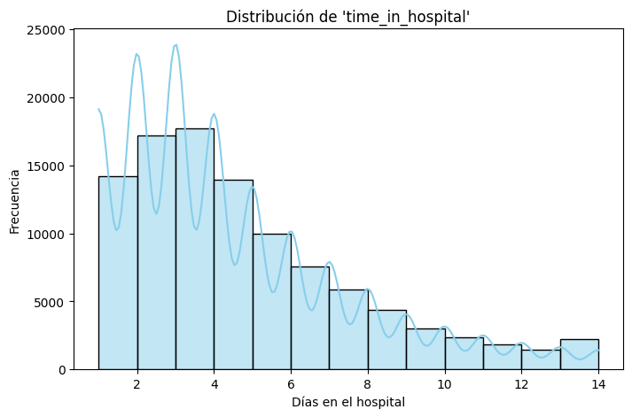
Número de procedimientos de laboratorio#
sns.histplot(df.num_lab_procedures, bins=20, kde=False)
plt.xlabel("Pruebas de laboratorio")
plt.ylabel("Cantidad")
plt.show()
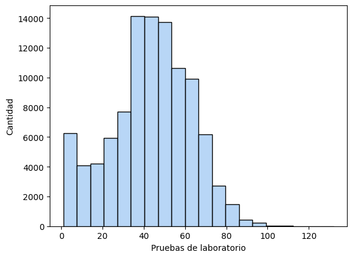
Los pacientes en su mayoría se hicieron entre 40 y 70 pruebas de laboratorio.
Rara vez los pacientes se hacen más de 80 pruebas de laboratorio.
sns.boxplot(data=df, x='target', y='num_lab_procedures')
plt.xlabel("Readmisión (0 = No, 1 = Sí)")
plt.ylabel("Número de procedimientos de laboratorio")
plt.title("Procedimientos de laboratorio por estado de readmisión")
plt.show()
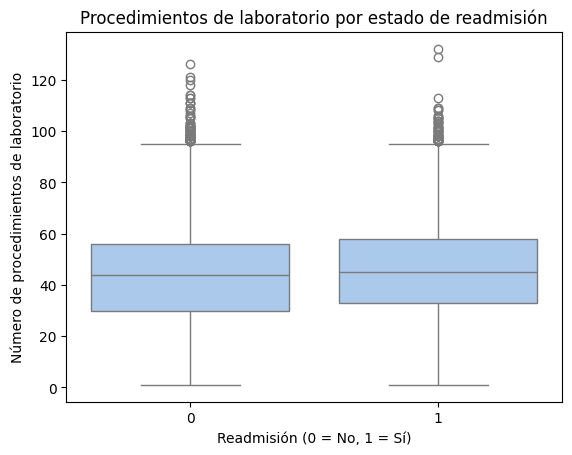
Los pacientes no readmitidos tienen una mediana de procedimientos de laboratorio ligeramente menor que los readmitidos.
Hay una tendencia leve a que los pacientes readmitidos hayan pasado por más procedimientos de laboratorio que los no readmitidos.
# Agrupamos por número de procedimientos y calculamos la probabilidad de readmisión
prob_df = df.groupby('num_lab_procedures')['target'].mean().reset_index()
# Graficamos
plt.figure(figsize=(10,5))
sns.lineplot(data=prob_df, x='num_lab_procedures', y='target')
plt.xlabel("Número de procedimientos de laboratorio")
plt.ylabel("Probabilidad de readmisión")
plt.title("Probabilidad de readmisión según procedimientos de laboratorio")
plt.ylim(0, 1) # La probabilidad siempre está entre 0 y 1
plt.show()
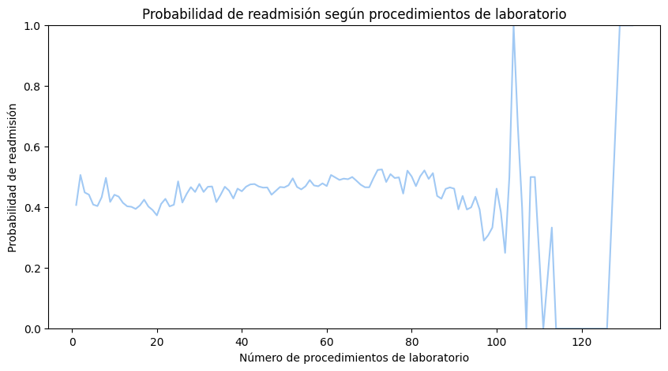
En la mayor parte del rango (0 a 90 procedimientos de laboratorio), la probabilidad de readmisión oscila entre 0.4 y 0.5.
A partir de ~100 procedimientos, la curva se vuelve muy inestable con picos que alcanzan 1.0 y caídas abruptas, lo que puede ser explicado por la escasez de datos en esta zona.
Medicamentos#
Nos enfrentamos a 24 variables que describen el estado de la medicación para la diabetes de cada paciente. Cada una puede tener los valores “Up”, “Down”, “Steady” o “No”.
Revisaremos por separado solo la insulina, y mas abajo se encontraran todos los demás medicamentos.
Insulina#
plt.figure(figsize=(8, 6))
sns.countplot(x='insulin', hue='target', data=df, order=['No', 'Steady', 'Down', 'Up'])
plt.title('Distribución del Uso de Insulina')
plt.xlabel('Estado de la Insulina')
plt.ylabel('Conteo de Pacientes')
plt.show()
print("Distribución por categoría de Insulina:")
print(df['insulin'].value_counts())
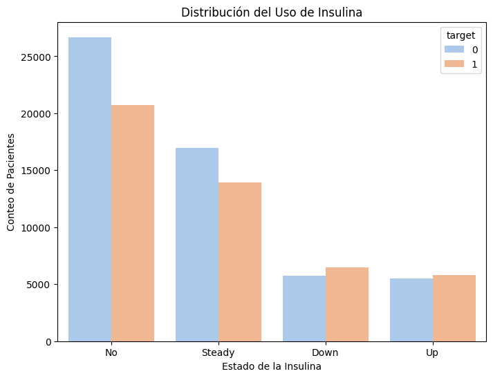
Distribución por categoría de Insulina:
insulin
No 47383
Steady 30849
Down 12218
Up 11316
Name: count, dtype: int64
Down(Dosis Disminuida):Qué vemos: Aquí ocurre un cambio fundamental. Por primera vez, la barra de reingresados es más alta que la barra azul (
target=0, no reingresados).En el grupo de pacientes cuya dosis de insulina fue disminuida, es más probable que sean reingresados a que no lo sean. Esto es una señal de alerta muy fuerte. Una disminución en la dosis puede indicar problemas como hipoglucemias recurrentes, lo cual es un factor de riesgo significativo para futuras complicaciones y hospitalizaciones.
Up(Dosis Aumentada):Qué vemos: Similar al grupo “Down”, la barra de reingresados es ligeramente más alta que la barra de ‘no reingresados’.
Al igual que en el grupo “Down”, los pacientes que necesitaron un aumento de insulina tienen una mayor probabilidad de ser reingresados. Un aumento de la dosis indica un control glucémico deficiente o el empeoramiento de su condición, lo que los pone en un alto riesgo de reingreso.
# Lista de todas las columnas de medicamentos
drug_columns = ['metformin', 'repaglinide', 'nateglinide', 'chlorpropamide',
'glimepiride', 'acetohexamide', 'glipizide', 'glyburide', 'tolbutamide',
'pioglitazone', 'rosiglitazone', 'acarbose', 'miglitol', 'troglitazone',
'tolazamide', 'examide', 'glyburide-metformin',
'glipizide-metformin', 'glimepiride-pioglitazone', 'metformin-rosiglitazone',
'metformin-pioglitazone']
def explore_drug(drugs):
for drug in drugs:
sns.countplot(x = drug,
hue = "target",
data = df)
plt.show()
print(drug.upper())
print(df[f"{drug}"].value_counts())
explore_drug(drug_columns)